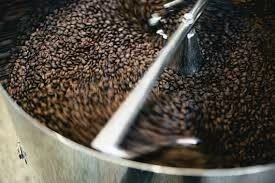
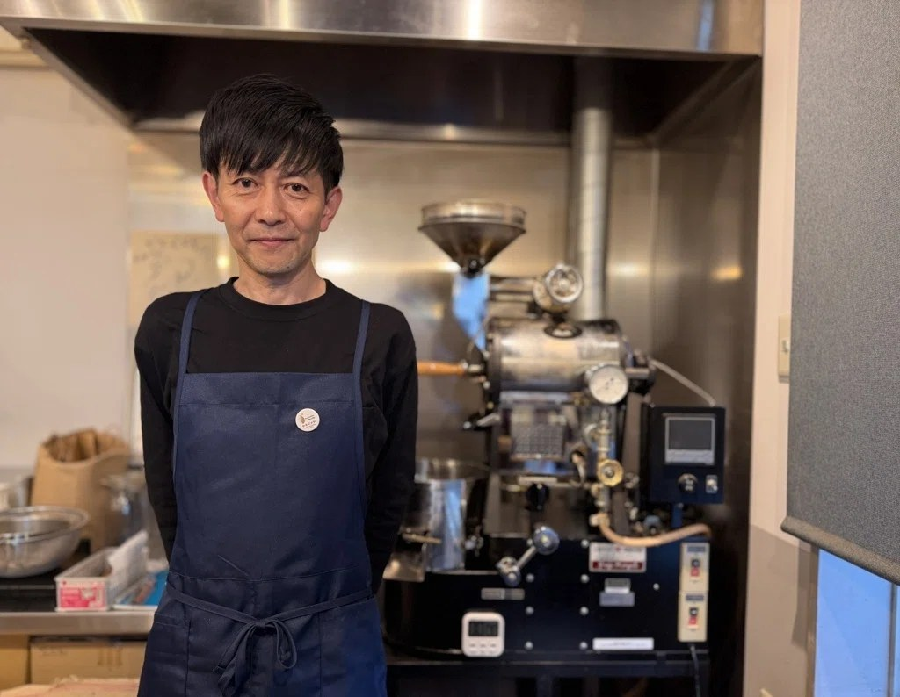
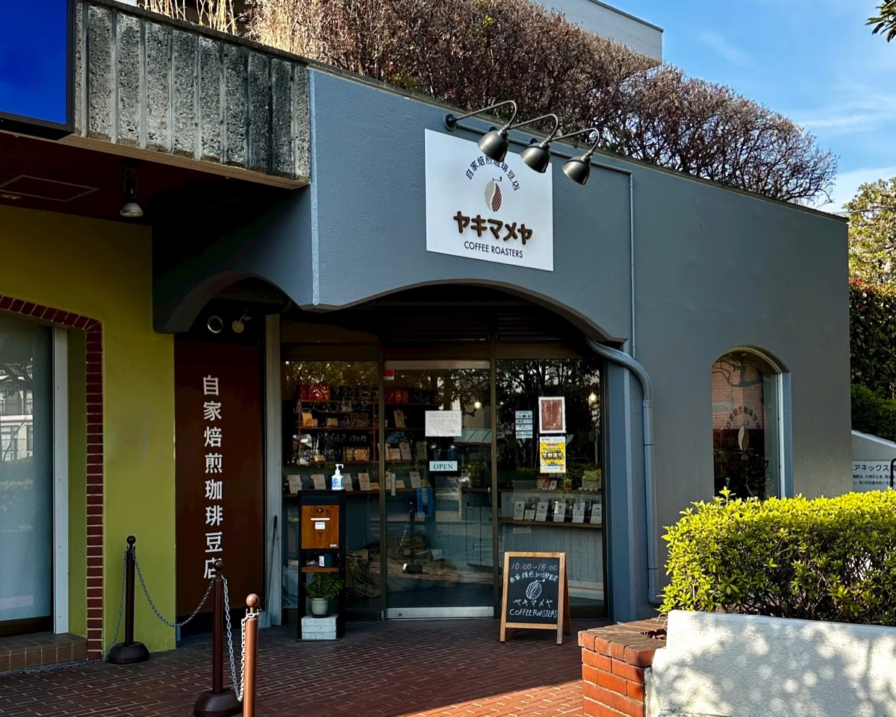

人生の二周目、最高の深煎りを求めて ― ヤキマメヤ店主・渡部さんの転身劇
ゲスト: 渡部さん（ヤキマメヤ 店主）
不動産会社の経営者から、自家焙煎珈琲豆店の店主へ。パーソナリティのサキとタクが、ヤキマメヤ渡部さんの波瀾万丈な転身劇に迫る特別回。
再生ボタンで、そのままこのページで聴けます。
ヤキマメヤのオンラインストア自家焙煎珈琲の編集コラム「焙煎ノート」
直火の轟音、ハンドピックの静寂。生豆が一杯のカップになるまでの全工程を、科学と職人技の両面から深く読み解きます。
珈琲は、もはや
「嗜好品」ではない。
焙煎ノートは、生豆の選定、焙煎機の火加減、ハンドピックの一粒一粒、抽出の一滴まで、コーヒー豆が一杯のカップになるまでの全工程を読み解く編集コラムです。産地の物語、焙煎士の哲学、抽出と保存の知恵。一杯の珈琲に宿る本当の価値を、複数の視点から紐解きます。
工程の順に、読んでおきたいコラムを並べました。気になる工程から入っても読めます。


ヤキマメヤ 店主・渡部さん

「自分が作ったもので、お客さんに喜んでもらいたい。」
横浜市青葉区・市が尾駅近くの自家焙煎珈琲豆店「ヤキマメヤ」店主、渡部さん。前職は不動産会社の経営者で、主にチェーン店の出店物件を仲介する仕事をしていました。
カテゴリで絞り込んで、気になるテーマから。毎週金曜に更新しています。
チェーン店の出店仲介をしていた不動産経営者が、コロナ禍のハンドドリップをきっかけにわずか数年でプロの珈琲焙煎士へ。ヤキマメヤ店主・渡部さんの転身記。
ブラジル・コロンビア・グァテマラのスペシャルティ豆を組み合わせた、ヤキマメヤの看板ブレンド。中煎り(シティーロースト)が生み出す、酸味・苦味・コク・甘みのバランスを解説する。
直火式の焙煎機はなぜ今も選ばれ続けるのか。1釜1釜、豆と対話するように焙煎する理由を探る。
焙煎を終えた豆を、なぜもう一度人の目と手で選別するのか。地味だが欠かせない最後の工程を取材した。
同じ豆でも焙煎度が変われば別の飲み物になる。浅煎り・中煎り・深煎り、それぞれが引き出す個性を解説する。
世界中から選び抜かれる生豆は、何を基準に評価されているのか。産地・標高・グレードから読み解く。
赤い果実だったコーヒーチェリーが、生豆になるまでの道のり。ウォッシュト・ナチュラル・ハニー、精製方法で味は大きく変わる。
せっかくの焙煎豆も、淹れ方次第で味が変わる。お湯の温度、注ぎ方、蒸らし時間 ― 家庭で実践できる基本を紹介する。
焙煎したての豆も、保存方法を誤ればあっという間に風味が落ちる。鮮度を長持ちさせるための基本ルールをまとめた。
単一の豆では出せない味を、複数の豆を組み合わせて作り出す。ブレンド設計に込められた焙煎士の発想を紐解く。
来る日も来る日も、豆と向き合い続ける自家焙煎店の店主たち。その仕事への向き合い方を取材した。
「深煎りはカフェインが少ない」という説はどこまで本当なのか。焙煎とカフェイン量の関係を整理する。
焙煎士やバイヤー、バリスタ本人の声で。文章では伝わらない現場の熱量を届けます。
ゲスト: 渡部さん（ヤキマメヤ 店主）
不動産会社の経営者から、自家焙煎珈琲豆店の店主へ。パーソナリティのサキとタクが、ヤキマメヤ渡部さんの波瀾万丈な転身劇に迫る特別回。
再生ボタンで、そのままこのページで聴けます。
ヤキマメヤのオンラインストア焙煎士は、豆のはぜる音で火を止めるタイミングを判断します（直火焙煎とは何か）。焙煎の各段階の音を、順に聴き比べられます。
回転するドラムの中で豆が転がる低い音と、ガスの炎の音。焙煎のあいだ、ずっと続く背景の音です。
豆の内部が膨らみ、パチパチとはぜ始める。ここから味の設計の本番です。
さらに温度が上がると、より高く、細かい音に変わります。深煎りの目安です。
豆を投入してから排出まで、約8分。ドラムの回転、炎の音、1ハゼ、2ハゼ、そして冷却。一釜の流れを、音だけで通して聴けます。
作業や就寝前のBGMにも。ループ再生に対応しています。
コラムで読んだ焙煎の考え方を、実際の一杯で確かめてください。
市が尾ブレンドのほかにも、ヤキマメヤでは季節に応じて豆を入れ替えながら、常時16〜18種類を揃えています。
ヤキマメヤの名を冠したブレンドです。味わいや配合の詳細は、オンラインストアでご確認ください。
オンラインストアで見る産地の一般的な傾向として、ナッツやチョコレートを思わせる丸みのある味わいと語られることが多い産地です。
オンラインストアで見る産地の一般的な傾向として、高地で栽培される豆が多く、明るい酸味と甘みが特徴とされる産地です。
オンラインストアで見る※ 産地の説明は一般的な傾向です。各商品の焙煎度・価格・在庫は、オンラインストアでご確認ください。
豆を手に取ったとき、どこを見れば「本質的な価値」がわかるのか。
カフェイン自体は高温に強く、焙煎による分解はごくわずかとされます。豆の重量あたりでは焙煎度による差は大きくありません。ただし深煎りは豆が膨らんで軽くなるため、スプーンなど同じ体積で量ると重量は少なくなりやすく、結果として差が出ることがあります。正確に比べたいときは、重量で量るのがおすすめです。 関連コラムを読む
焙煎日から2週間程度が飲み頃のピークとされることが多いですが、焙煎度や豆の種類によって幅があります。「いつ焼かれた豆か」を意識することが、一杯の質を左右します。 関連コラムを読む
選択肢ではありますが、出し入れの際の温度差で容器内に結露が生じ、かえって劣化を早める場合があります。使い切れる量をこまめに購入し、直射日光の当たらない常温の暗所で、密閉できる容器に入れるのが最もシンプルで確実です。 関連コラムを読む
高温の焙煎工程を経ると、焼けムラのある豆や割れた豆など、新たな欠点豆が生まれます。細かな色ムラや焼け方の違いは、今も熟練した人の目に頼る部分が大きく、この工程を省かないことが雑味のない一杯を支えています。 関連コラムを読む
ヤキマメヤ店主の渡部さんは、看板ブレンドの「市が尾ブレンド」からの入口を勧めています。ブラジル・コロンビア・グァテマラの3産地を個別に焙煎してから合わせた、中煎り（シティーロースト）のバランスのよい一杯です。豆のまま・粉挽きの両方から選べます。 関連コラムを読む
ヤキマメヤオーナーコラムを、いち早くお届けします。焙煎ノートは毎週金曜に更新しています。
焙煎ノートに会員登録すると、ヤキマメヤオーナーコラムをいち早くお届けします。毎週金曜更新。